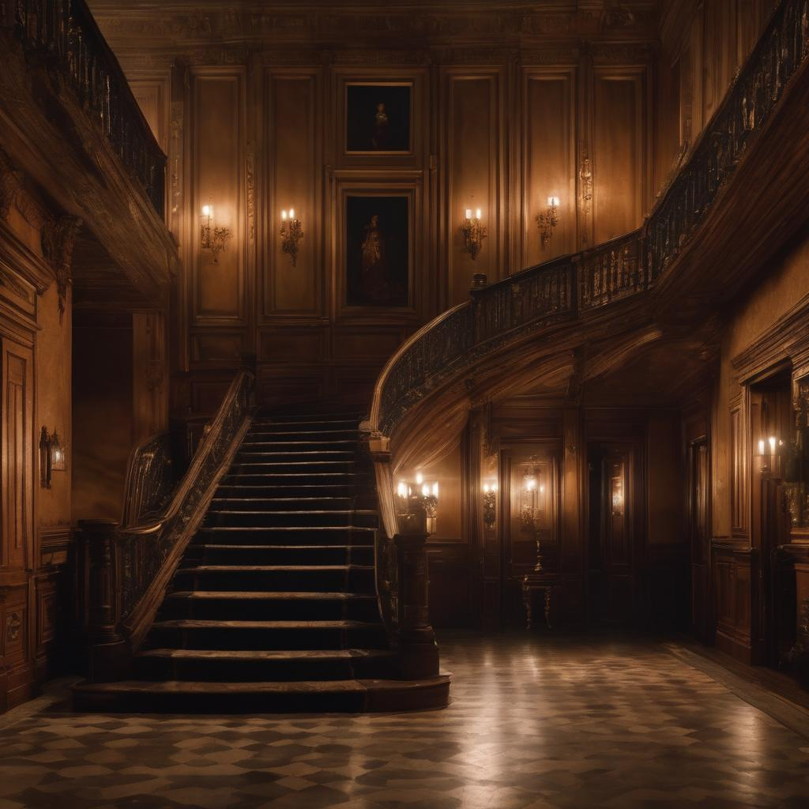
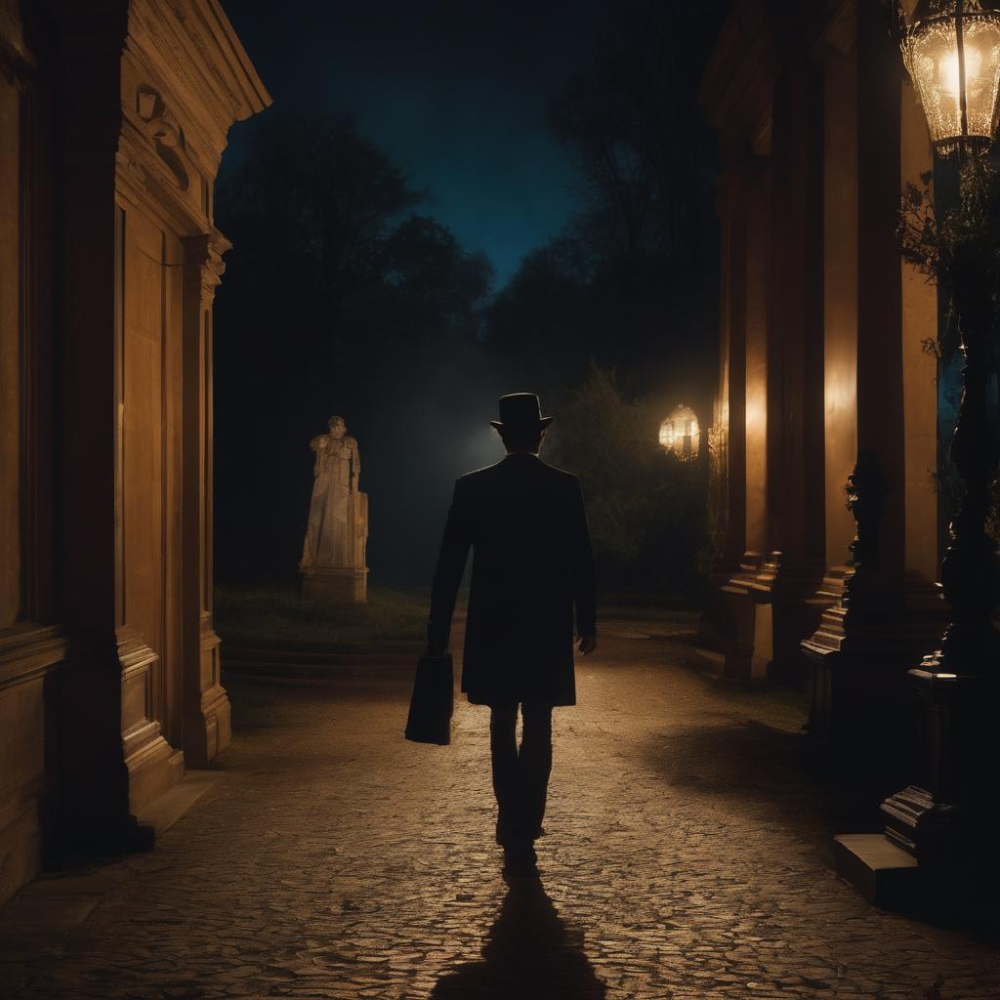
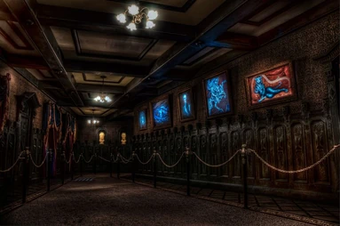
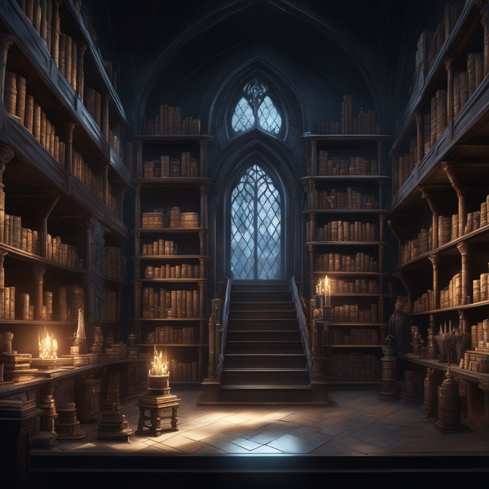
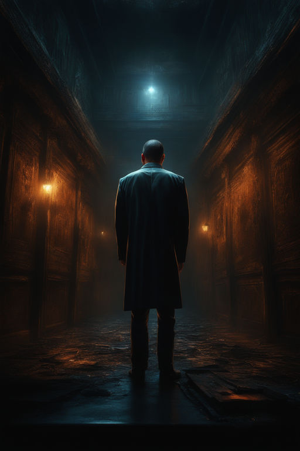
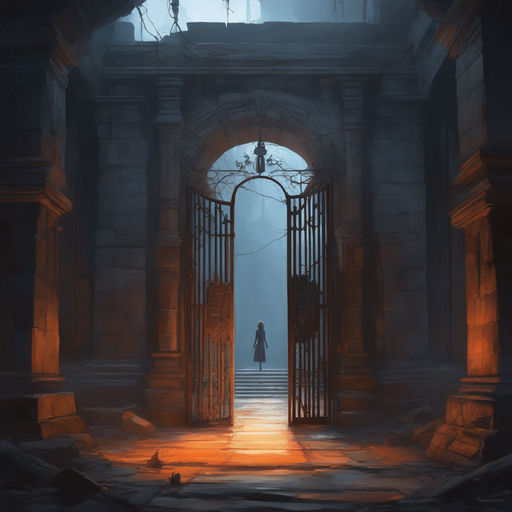
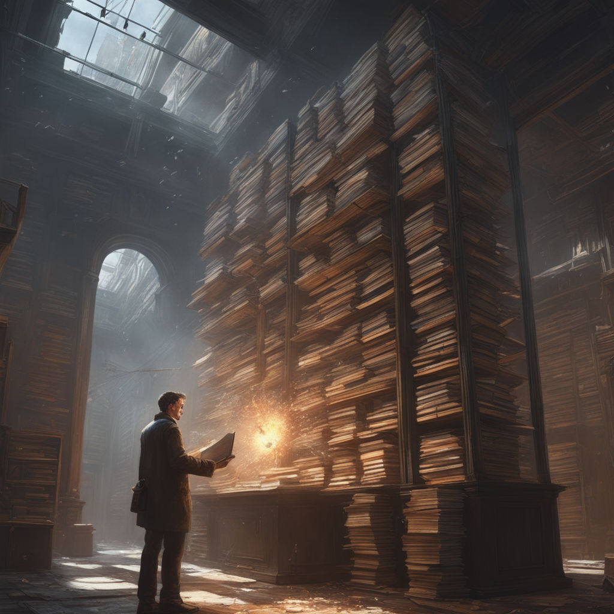

The Haunting of Hollow Manor
Introduction
Nestled at the outskirts of a quiet, forgotten town, there stood a mansion unlike any other—a place where time seemed to have frozen, and the echoes of the past whispered through its decrepit halls. This was Hollow Manor, a once-grand estate that had fallen into disrepair, shrouded in legends of curses, restless spirits, and unspeakable horrors. For years, the mansion had stood abandoned, a sinister silhouette against the night sky, beckoning the curious and the brave. Many had ventured to unlock its secrets, but few had returned to tell the tale. Its ominous reputation had grown, and the locals spoke of ghostly apparitions and eerie phenomena that defied explanation. You, dear reader, now find yourself on the precipice of an enigma, standing before Hollow Manor. The moon, veiled in a shroud of clouds, casts an eerie glow over the decaying facade, while the wind's mournful whispers carry tales of woe. The weight of history and the unknown presses upon you, demanding a choice. Do you summon the courage to step across the threshold, drawn by the allure of uncovering the mansion's dark secrets, or do you heed the warnings, turning away to escape the clutches of Hollow Manor, vowing never to return? Your decision will shape your destiny as you embark on a spine-tingling journey into the heart of darkness in "The Haunting of Hollow Manor." Choose wisely, for within these walls, the past and present converge in a tale of terror and intrigue.
1/3
Nestled at the outskirts of a quiet, forgotten town, there stood a mansion unlike any other—a place where time seemed to have frozen, and the echoes of the past whispered through its decrepit halls. This was Hollow Manor, a once-grand estate that had fallen into disrepair, shrouded in legends of curses, restless spirits, and unspeakable horrors. For years, the mansion had stood abandoned, a sinister silhouette against the night sky, beckoning the curious and the brave. Many had ventured to unlock its secrets, but few had returned to tell the tale. Its ominous reputation had grown, and the locals spoke of ghostly apparitions and eerie phenomena that defied explanation. You, dear reader, now find yourself on the precipice of an enigma, standing before Hollow Manor. The moon, veiled in a shroud of clouds, casts an eerie glow over the decaying facade, while the wind's mournful whispers carry tales of woe. The weight of history and the unknown presses upon you, demanding a choice. Do you summon the courage to step across the threshold, drawn by the allure of uncovering the mansion's dark secrets, or do you heed the warnings, turning away to escape the clutches of Hollow Manor, vowing never to return? Your decision will shape your destiny as you embark on a spine-tingling journey into the heart of darkness in "The Haunting of Hollow Manor." Choose wisely, for within these walls, the past and present converge in a tale of terror and intrigue.
Choose
Option 1:
Summon your courage and enter the mansion.

Option 2:
Turn and leave, vowing never to return.

2/3
With a deep breath, you summon every ounce of courage and push open the creaking door. It resists your efforts, protesting with a mournful groan that seems to reverberate through the very foundation of the mansion. As the door reluctantly yields, you're greeted by a gust of stale, stagnant air, laden with the scent of age-old secrets and forgotten memories. You step gingerly across the threshold, your flashlight a feeble beacon in the oppressive darkness that surrounds you. The beam cuts through the shadows, revealing faded wallpaper peeling from the walls and dust-covered furniture that stands like sentinels, guarding the mansion's long-kept mysteries. Your heart quickens as you take in your surroundings, finding yourself in the grand foyer. Once a place of opulence, the grandeur has been replaced by a haunting desolation. The once-majestic chandelier, now a cobweb-draped relic, hangs like a specter from the ceiling. The floorboards beneath your feet groan in discomfort as if disturbed by your presence. Before you stands a sweeping, dusty staircase, its wooden banister worn smooth by the hands of those who have long since departed this world. It leads to the upper floors, where darkness and silence seem to have taken up permanent residence. You stand at a crossroads, confronted with a choice that will shape the course of your journey. The upper floors hold untold secrets, shrouded in the veil of uncertainty. Do you ascend the staircase, following the beckoning path to the unknown? Or does the foreboding atmosphere give you pause, making you consider a thorough investigation of the ground floor before venturing further into the heart of Hollow Manor? The choice is yours, and it will dictate the direction of your exploration into the enigmatic depths of "The Haunting of Hollow Manor." The mansion awaits, its secrets poised to unravel before your very eyes.
Choose
Option 1:
Ascend the staircase.

Option 2:
Investigate the ground floor first.

3/3
You cautiously climb the creaking stairs, each step echoing ominously through the silent mansion, as if the very house itself is keeping a record of your presence. The oppressive atmosphere seems to grow denser with every ascending step, pressing down on your shoulders. At the top of the staircase, you find yourself in a long, dimly lit hallway. The flickering candle sconces lining the walls cast eerie shadows that dance and sway in response to your every move. The air is thick with the scent of age and decay, and the only sound is the distant, faint rustling of curtains or the faintest whisper of an unseen wind. The walls are adorned with portraits of stern-looking individuals, their eyes following your every move with a piercing, unsettling gaze. Each subject bears the mark of a past era, and their austere countenances seem to harbor centuries of secrets and silent judgments. As you study them, it becomes evident that one particular portrait stands out among the others—a figure, perhaps the master of this forsaken domain, whose eyes seem to penetrate the depths of your very soul. In this hallway, you stand at a crossroads once more. The haunting portrait beckons you with its enigmatic allure. Do you yield to your curiosity and examine it more closely? Or does the oppressive ambiance of this dimly lit passage lead you to continue down the hallway, further into the mysteries of Hollow Manor?
Choose
Option 1:
Examine the haunting portrait more closely.
Option 2:
Continue down the hallway.

3/3
You make a calculated decision to explore the ground floor first, guided by a sense of caution. Your path leads you to a dimly lit library, where time has cast its heavy cloak upon the shelves lined with dusty tomes. The pages of countless books seem to cradle the secrets of generations, their titles faded and forgotten, bound in leather worn smooth by the touch of countless curious hands. An ancient fireplace, its once-polished stone now marred by the ravages of time, flickers ominously in a corner, casting long, dancing shadows across the room. The flames are feeble, struggling to maintain their existence, and yet, they exude an uncanny warmth that seems to defy the mansion's pervasive chill. As you step further into the library, you're engulfed by the musty scent of age-old knowledge, mingled with the faint aroma of burning wood. The air is hushed, as though the very room dares not disturb the slumber of the countless stories that surround you. Suddenly, a whisper, so faint that it's almost imperceptible, reaches your ears. It's a spectral murmur, like the secrets of the books themselves being spoken into the stillness of the chamber. You strain to make out the words, but they elude you, slipping through your grasp like gossamer threads of a long-forgotten conversation. The decision now lies before you: do you investigate this eerie whisper, an enigmatic voice that seems to beckon from the very heart of the library's secrets? Or do you choose to continue your exploration of the library, to uncover what secrets lie hidden among the dusty tomes?
Choose
Option 1:
Investigate the mysterious whisper.

Option 2:
Ignore it and continue exploring the library.

...
The End
...
To be continued ...